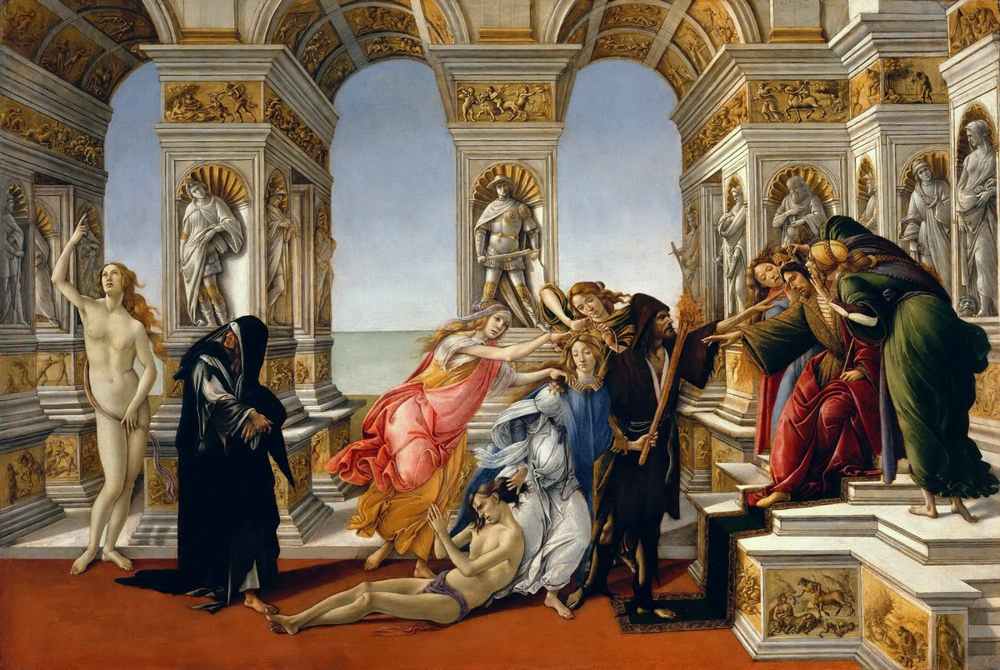

Proverbios 18 — La Traducción Mister

Botticelli pintó la escena a partir de la descripción que el escritor griego Luciano hace de un cuadro perdido de Apeles, a quien un pintor rival había calumniado ante el rey Ptolomeo (Luciano, Que no hay que creer fácilmente a la calumnia 2–5). En el trono se sienta un juez con orejas «casi como las de Midas», con la Ignorancia y la Sospecha a su lado; la Calumnia, con una antorcha, arrastra a su víctima por el pelo, guiada por la Envidia y adornada por la Insidia y el Engaño; a la izquierda el Arrepentimiento, de negro, se vuelve hacia la Verdad. Luciano define la calumnia como una acusación «creída sin réplica, de una sola parte»: el primero en su disputa, antes de que venga su prójimo y lo escudriñe (Proverbios 18:17), oído por un juez que responde antes de haber oído (18:13).

contra toda sabiduría práctica se enciende.nota
sino solo en dejar al descubierto su corazón.nota
y con la deshonra, el oprobio.nota
arroyo que mana, fuente de sabiduría.nota
para desviar al justo en el juicio.nota
y su boca llama a los golpes.nota
y sus labios, una trampa para su alma.nota
y bajan a las cámaras del vientre.nota
es hermano del señor de la destrucción.nota
a ella corre el justo, y es puesto en alto.nota
y como muro puesto en alto, en su imaginación.nota
y antes de la honra, la humildad.nota
necedad le es, y humillación.nota
pero el espíritu abatido, ¿quién lo podrá llevar?nota
y el oído de los sabios busca conocimiento.nota
y lo lleva delante de los grandes.nota
luego viene su prójimo y lo escudriña.nota
y separa a los poderosos.nota
y las contiendas son como el cerrojo de una ciudadela.nota
del producto de sus labios se sacia.nota
y los que la aman comerán su fruto.nota
y obtiene benevolencia de Jehová.nota
Notas del traductor — versículo por versículo
El que se aparta. «El que se aparta busca lo que codicia; contra toda sabiduría práctica se enciende»: nifrad es el que se ha separado de los demás, de parad, separar, y ta’avá es la codicia, la palabra de la chusma que en el desierto «codició una codicia» (Números 11:4, ya en estas páginas). Tushiyá es la «sabiduría práctica», como en «guarda la sabiduría práctica y la discreción» (Proverbios 3:21). Yitgalá, «se enciende», es un verbo que Proverbios reserva para la riña que estalla: está en tres versículos de la Biblia hebrea, todos de Proverbios, aquí y dos veces más (Proverbios 17:14 y 20:3). La TNM 1987 tiene «contra toda sabiduría práctica estallará»; la NVI «contra todo sano juicio inicia un pleito». La RV60 lee la segunda línea de otro modo, «Su deseo busca el que se desvía, Y se entremete en todo negocio», y la RV 1909 igual, «busca el que se desvía, Y se entremete en todo negocio».
¿Codicia o pretexto? El griego tiene otra primera línea: «el hombre que quiere separarse de sus amigos busca pretextos», prophaseis. Eso es lo que diría el hebreo con una sola letra cambiada, le-toaná, «por un pretexto», en lugar de le-ta’avá, «por codicia», y toaná es la «ocasión» que Sansón buscaba contra los filisteos (Jueces 14:4, ya en estas páginas). Las lecturas difieren; esta traducción imprime el hebreo tal como está.
Un corazón al descubierto. «El necio no se complace en el discernimiento, sino solo en dejar al descubierto su corazón»: el necio es el kesil, el necio torpe y satisfecho de sí de 3:35, y tevuná es el «discernimiento», como en «el ser humano que obtiene discernimiento» (3:13). Be-hitgalot libó es «en que su corazón se descubra a sí mismo», de galá, descubrir, y suena como el yitgalá del v1: uno se enciende, el otro se pone al descubierto, y ninguno de los dos escucha. La RV60 tiene «Sino en que su corazón se descubra»; la TNM 1987 «fuera de que su corazón se descubra»; la NVI convierte el corazón en charla, «tan solo hace alarde de su propia opinión».
Entra el desprecio. «Cuando viene el malvado, viene también el desprecio, y con la deshonra, el oprobio»: el verbo viene dos veces, be-vo … ba, como si el desprecio le pisara los talones. Qalón, «deshonra», es lo que se llevan los necios en Proverbios 3:35, y jerpá es el «oprobio». Las mismas consonantes pueden leerse rashá, «un malvado», o resha, «maldad»; las vocales impresas dan el hombre, y la NVI toma la otra lectura, «Con la maldad viene el desprecio». La RV60 tiene «Cuando viene el impío, viene también el menosprecio». El griego dice «cuando el impío llega a lo hondo de los males», eis bathos kakōn.
Aguas profundas y fuente de sabiduría. «Aguas profundas son las palabras de la boca del hombre: arroyo que mana, fuente de sabiduría»: dos líneas sin «y» ni «pero» entre ellas, y las lecturas difieren sobre cómo se relacionan. El agua profunda es agua que hay que sacar, así que la primera línea puede decir que las palabras de un hombre esconden lo que lleva dentro, con la segunda como contraste; o las dos líneas pueden describir una sola cosa, el habla sabia, honda y fresca a la vez. Mayim amuquim, «aguas profundas», abre dos versículos de la Biblia hebrea, este y un dicho sobre el consejo en el corazón del hombre (Proverbios 20:5). La RV60 tiene «Y arroyo que rebosa, la fuente de la sabiduría»; la NVI «arroyo de aguas vivas, fuente de sabiduría»; la TNM 1987 «El pozo de la sabiduría es un torrente que sale burbujeando». Nové’a, «que mana», es el verbo que usa la propia Sabiduría cuando dice «les derramaré mi espíritu» (Proverbios 1:23, ya en estas páginas). El griego termina el versículo con «fuente de vida», pēgē zōēs.
Levantar el rostro. «Levantar el rostro del malvado no es bueno, para desviar al justo en el juicio»: se’et penei, «levantar el rostro» de alguien, es la manera hebrea de decir parcialidad, recibir con favor la cara de una de las partes; es lo que Jehová no hace, «que no levanta el rostro y no toma soborno» (Deuteronomio 10:17, ya en estas páginas). Véase panim. La RV 1909 tiene «Tener respeto á la persona del impío»; la TNM 1987 «Mostrar parcialidad al inicuo no es bueno»; la RV60 «Para pervertir el derecho del justo, no es bueno».
La boca del necio. «Los labios del necio entran en disputa, y su boca llama a los golpes»: riv es la disputa, la misma palabra que el v17 usa para un pleito ante el juez, y mahalumot son los golpes, los que esperan «a las espaldas de los necios» (Proverbios 19:29). Luego: «La boca del necio es su ruina, y sus labios, una trampa para su alma». Moqesh nafshó, «una trampa para su alma», es la trampa de la que se advierte al lector en Proverbios 22:25, «tomes una trampa para tu alma»; aquí el necio no necesita un mal compañero que se la ponga, porque la lleva en su propia boca. La RV60 tiene «Y su boca los azotes llama»; la RV 1909 «Y su boca á cuestiones llama»; la TNM 1987 «y su misma boca pide hasta golpes»; la NVI «sus labios son para él una trampa mortal».
El murmurador. «Las palabras del murmurador son como bocados que se tragan con avidez, y bajan a las cámaras del vientre»: nirgán viene de ragán, murmurar, el verbo de «murmuraron en sus tiendas» (Deuteronomio 1:27, ya en estas páginas). El sustantivo está en cuatro versículos de la Biblia hebrea, todos de Proverbios. La TNM 1987 lo llama «el calumniador», la RV60 «el chismoso».
¿Bocados o heridas? Mitlahamim es una palabra de sentido incierto. Está en dos versículos de la Biblia hebrea, este y su doble, que repite el versículo entero letra por letra (Proverbios 26:22), así que no hay un tercer pasaje con que probarla. La segunda línea, en la que las palabras bajan al vientre, sugiere comida, y así la leen casi todas: la RV60 tiene «Las palabras del chismoso son como bocados suaves»; la TNM 1987 «son como cosas que han de tragarse vorazmente»; la NVI «Los chismes son deliciosos manjares». La RV 1909 va por otro lado: «Las palabras del chismoso parecen blandas». Jadrei vaten, «las cámaras del vientre», usa jéder, el cuarto interior de una casa: el chisme se traga y luego vive en los cuartos del fondo. El griego tiene en este lugar un dicho del todo distinto: «el miedo derriba a los perezosos, y las almas de los afeminados pasarán hambre».
Flojo. «También el que se afloja en su trabajo es hermano del señor de la destrucción»: mitrapé viene de rafá, aflojarse, la imagen de una mano que suelta lo que tenía agarrado. No rompe nada; solo suelta, y el proverbio lo pone en la misma familia que el que destroza.
Un señor de la destrucción. Ba’al mashjit está construido como «señor de los sueños», el nombre que le dan a José sus hermanos (Génesis 37:19, ya en estas páginas), y como «señor de la ira» (Proverbios 22:24): un hombre que lleva el nombre de lo que posee. Mashjit es el Destructor de la noche de Pascua. Es el primero de tres hermanos en el capítulo: un hermano de la destrucción aquí, un hermano agraviado en el v19, y un amigo más que un hermano en el v24. La RV60 tiene «Es hermano del hombre disipador»; la TNM 1987 «hermano es del que causa ruina»; la NVI «confraterniza con el que es destructivo».
Una torre fuerte. «Torre fuerte es el nombre de Jehová; a ella corre el justo, y es puesto en alto»: migdal oz, «torre fuerte». La expresión está en tres versículos de la Biblia hebrea: aquí, en un salmo que llama a Dios «torre fuerte delante del enemigo» (Salmo 61:4; 61:3 en las Biblias en español), y en Tebez, donde «había en medio de la ciudad una torre fuerte, y allí huyeron todos los hombres y las mujeres» (Jueces 9:51, ya en estas páginas). Nisgav, «puesto en alto», es alto fuera de alcance, la palabra de «es alto — no puedo alcanzarlo» (Salmo 139:6). La RV60 tiene «Torre fuerte es el nombre de Jehová; A él correrá el justo, y será levantado»; la TNM 1987 «y se le da protección»; la NVI «a ella corren los justos y se ponen a salvo».
Una ciudad fuerte, en su imaginación. El versículo siguiente le responde frase por frase: «Los bienes del rico son su ciudad fuerte, y como muro puesto en alto, en su imaginación». Qiryat uzó, «su ciudad fuerte», repite el oz de la torre, y nisgavá, «puesto en alto», repite la palabra del justo; solo cambia la última, be-maskitó, «en su imaginación». El justo está en alto de verdad; el rico, en su propia cabeza. Maskit es en otros lugares una piedra grabada, una imagen hecha para mirarla (Números 33:52, ya en estas páginas); aquí la imagen la lleva dentro. La primera línea abre también otro proverbio, que termina de otro modo (Proverbios 10:15). La RV60 tiene «Y como un muro alto en su imaginación»; la TNM 1987 «son como un muro protector en su imaginación»; la NVI «y este cree que sus muros son inalcanzables».
Antes del quebranto. «Antes del quebranto se enaltece el corazón del hombre, y antes de la honra, la humildad»: shever es una rotura, un quebranto, y yigbah, «se enaltece», es una altura más en una serie de tres versículos: la torre, el muro y ahora el corazón. Las dos mitades tienen gemelos: «antes del quebranto» abre el dicho sobre la soberbia (Proverbios 16:18), y «antes de la honra, la humildad» cierra un dicho sobre el temor de Jehová (Proverbios 15:33). Anavá viene de la raíz de anav, humilde. La RV60 tiene «Antes del quebrantamiento se eleva el corazón del hombre»; la TNM 1987 «Antes de un ruidoso estrellarse»; la NVI invierte el orden, «Tras el orgullo viene la destrucción».
Responder antes de oír. «El que responde a un asunto antes de haber oído, necedad le es, y humillación»: meshiv davar es «devolver una palabra», el verbo de «para que devuelvas dichos de verdad a quienes te envían» (Proverbios 22:21). Ivelet es «necedad», como en 22:15, y kelimá es «humillación». La RV60 tiene «Le es fatuidad y oprobio»; la TNM 1987 «eso es tontedad de su parte y una humillación»; la NVI «Es necio y vergonzoso responder antes de escuchar».
Un espíritu que sustenta. «El espíritu del hombre lo sustentará en su enfermedad, pero el espíritu abatido, ¿quién lo podrá llevar?»: yejalkel es el verbo de José cuando promete mantener viva a su familia durante el hambre, «Y allí te sustentaré» (Génesis 45:11, ya en estas páginas). El espíritu puede llevar al cuerpo; la pregunta es quién lleva al espíritu. Rúaj nejeá, «espíritu abatido», es una expresión de este libro: está en tres versículos de la Biblia hebrea, todos de Proverbios. La RV60 traduce rúaj por «ánimo», «El ánimo del hombre soportará su enfermedad; Mas ¿quién soportará al ánimo angustiado?»; la TNM 1987 conserva el espíritu, «El espíritu de un hombre puede soportar su dolencia»; la NVI «¿pero quién podrá levantar el ánimo al abatido?».
Un oído que busca. «El corazón del que entiende adquiere conocimiento, y el oído de los sabios busca conocimiento»: navón es el participio de bin, «los entendidos» de Proverbios 1:5 (ya en estas páginas); qaná, «adquiere», es el verbo corriente de comprar; y yevaqesh, «busca», es el verbo del v1. El que se aparta busca lo que codicia; el oído sabio busca da’at, conocimiento, que el versículo nombra dos veces. La TNM 1987 tiene «El corazón del entendido adquiere conocimiento»; la RV60 pone otra palabra en la primera mitad, «El corazón del entendido adquiere sabiduría», y otra más en la segunda, «busca la ciencia».
Un regalo que abre espacio. «El regalo del hombre le abre espacio y lo lleva delante de los grandes»: matán es un regalo sin más, la palabra que usa Siquem cuando ofrece «la dote y el regalo» (Génesis 34:12, ya en estas páginas). No es shojad, el soborno que compra una sentencia, y el proverbio ni lo alaba ni lo condena: cuenta cómo se abren las puertas. Yarjiv lo es «le ensancha». La RV60 tiene «La dádiva del hombre le ensancha el camino»; la TNM 1987 «le efectúa una gran abertura»; la NVI «Con regalos se abren todas las puertas».
La otra parte del pleito. «Justo es el primero en su disputa; luego viene su prójimo y lo escudriña»: el hebreo pone primero el veredicto, tsadiq, «justo», sin «parece». El primero que habla tiene razón solo hasta que llega el segundo, y jaqar, «escudriñar», es el verbo de «Jehová, me has escudriñado» (Salmo 139:1). El texto escrito tiene yavó, «viene»; el texto leído tiene u-vá, «y viene»; el sentido es el mismo. La TNM 1987 conserva el adjetivo solo, «El que es primero en su causa judicial es justo»; la RV60 le añade un verbo, «Justo parece el primero que aboga por su causa»; la NVI «hasta que llega la otra parte y lo refuta».
La suerte. «La suerte pone fin a las contiendas y separa a los poderosos»: goral es la suerte, y midyanim, «contiendas», es de la familia de madón, la «contienda» que sale con el burlador (Proverbios 22:10). Yafrid, «separa», es el verbo del v1: allí un hombre se aparta y se enciende; aquí la suerte aparta a los que pelean y la pelea se acaba. La RV60 tiene «La suerte pone fin a los pleitos, Y decide entre los poderosos»; la RV 1909 «Y desparte los fuertes»; la TNM 1987 «y separa, uno de otro, hasta a los poderosos».
Un hermano agraviado. «El hermano agraviado es más duro que una ciudad fuerte»: la primera línea hebrea es solo aj nifshá mi-qiryat oz, «un hermano — agraviado — que una ciudad fuerte», sin adjetivo alguno; «más duro» se suple a partir del «que». Nifshá es un pasivo de pashá, el verbo detrás de pesha, revuelta: un hermano contra quien se han rebelado, traicionado por los suyos. La forma está en un solo versículo de la Biblia hebrea. La ciudad fuerte es la del v11: el rico se fortifica con dinero, el hermano agraviado con su agravio. La RV60 tiene «El hermano ofendido es más tenaz que una ciudad fuerte»; la TNM 1987 deja el hueco abierto, «El hermano contra quien se ha transgredido es más que un pueblo fuerte»; la NVI «Más resiste el hermano ofendido que una ciudad amurallada».
El cerrojo de una ciudadela. «Y las contiendas son como el cerrojo de una ciudadela»: el texto escrito tiene medonim y el texto leído midyanim, dos grafías de las «contiendas» del v18. El beríaj es la barra que atraviesa una puerta, el cerrojo que Sansón se llevó con la puerta de Gaza, «con cerrojo y todo» (Jueces 16:3, ya en estas páginas), y armón es una ciudadela. La RV60 añade a quién pertenecen las contiendas, «Y las contiendas de los hermanos son como cerrojos de alcázar»; la TNM 1987 «hay contiendas que son como la barra de una torre de habitación».
Un hermano ayudado. El griego convierte la advertencia en promesa: «un hermano ayudado por un hermano es como una ciudad fuerte y alta», boēthoumenos. El «ayudado» del griego encaja con una palabra hebrea a una letra de distancia de nifshá: noshá, «salvado». Las lecturas difieren; esta traducción imprime el hebreo.
El fruto de la boca. «Del fruto de la boca del hombre se sacia su vientre; del producto de sus labios se sacia»: el verbo savá, «saciarse», está dos veces, y la traducción conserva las dos. Tevuá, «producto», es la palabra de cosecha de «de lo primero de todos tus productos» (Proverbios 3:9). En el v8 otros se tragan las palabras del murmurador; aquí cada uno se come las suyas. La RV60 tiene «Se saciará del producto de sus labios»; la TNM 1987 «él queda satisfecho hasta con el producto de sus labios»; la NVI «Cada uno se llena con lo que dice».
En mano de la lengua. «La muerte y la vida están en mano de la lengua, y los que la aman comerán su fruto»: be-yad lashón es literalmente «en mano de la lengua». Yad, mano, es la manera corriente de decir poder y dominio en hebreo, y la traducción conserva la mano porque la imagen es lo que importa: una lengua que tiene la muerte en una mano y la vida en la otra. El griego también la conserva, en cheiri glōssēs. «Los que la aman» son los que aman la lengua, los que gustan de hablar; comen lo que ella produce, y la línea no dice si es muerte o vida. La RV60 tiene «La muerte y la vida están en poder de la lengua»; la RV 1909 igual, «La muerte y la vida están en poder de la lengua»; la TNM 1987 «Muerte y vida están en el poder de la lengua»; la NVI «En la lengua hay poder de vida y muerte».
Halló, halló. «El que ha hallado esposa ha hallado el bien, y obtiene benevolencia de Jehová»: la primera línea son cuatro palabras hebreas, matsá ishá matsá tov, «ha hallado esposa, ha hallado el bien». Tov es la palabra de «No es bueno que el ser humano esté solo» (Génesis 2:18, ya en estas páginas). Va-yafeq, «y obtiene», es el verbo de «el ser humano que obtiene discernimiento» (Proverbios 3:13), y ratsón es la benevolencia, la buena voluntad, mantenida aparte de jen, el favor. La segunda línea entera está en dos versículos de la Biblia hebrea: aquí, y en el discurso de la propia Sabiduría, «el que me halla, halla la vida, y obtiene benevolencia de Jehová» (Proverbios 8:35). El versículo pone el hallar esposa al lado del hallar la Sabiduría, y el libro termina haciendo la pregunta al revés: «Una mujer de valor — ¿quién la hallará?» (Proverbios 31:10).
El «buena» que falta. El hebreo no llama buena a la esposa; lo bueno está en el hallazgo. La TNM 1987 suple el adjetivo y lo pone entre corchetes, «¿Ha hallado uno una esposa [buena]?»; la RV60 tiene «El que halla esposa halla el bien, Y alcanza la benevolencia de Jehová». El griego también suple «buena», gynaika agathēn, y luego añade un dicho entero que el hebreo no tiene: «el que echa fuera a una buena esposa echa fuera los bienes, y el que retiene a una adúltera es necio e impío».
Súplicas y palabras fuertes. «El pobre habla con súplicas, pero el rico responde con palabras fuertes»: tajanunim son «súplicas», la palabra de «con súplicas los guiaré» (Jeremías 31:8, ya en estas páginas); el pobre le habla al rico como quien reza. El rico responde azot, «cosas fuertes», de oz, fuerza. El plural está en un solo versículo de la Biblia hebrea. Es el cuarto oz del capítulo, después de la torre fuerte del v10, la ciudad fuerte del v11 y la ciudad fuerte del v19, y el único dirigido contra otra persona. La TNM 1987 conserva la fuerza, «pero el que es rico responde de manera fuerte»; la RV60 tiene «Mas el rico responde durezas»; la NVI «el rico responde con aspereza». El griego no tiene ni este versículo ni el siguiente.
Compañeros que quiebran. «El hombre de muchos compañeros va camino de la ruina»: ish re’im le-hitroea, «un hombre de compañeros es para hitroea», y la última palabra puede venir de dos raíces que se escriben igual. Una es ra’á, quebrar, hacer pedazos: esta forma suya está en dos versículos de la Biblia hebrea, aquí y en la tierra de Isaías que queda «del todo quebrantada» (Isaías 24:19). La otra es ra’ah, hacerse compañero, el verbo de «No te hagas amigo del señor de la ira» (Proverbios 22:24). Leída de la primera manera, una multitud de compañeros puede quebrar a un hombre; de la segunda, el hombre que tiene compañeros debe cuidar la amistad. La NVI tiene «Hay amigos que llevan a la ruina»; la TNM 1987 «Existen compañeros dispuestos a hacerse pedazos». La RV60 toma la otra raíz, «El hombre que tiene amigos ha de mostrarse amigo», y la RV 1909 antes que ella, «El hombre que tiene amigos, ha de mostrarse amigo». Esta traducción lee el quebranto, que el «pero» de la línea siguiente contrapone a un amigo que se mantiene.
Un amigo que se aferra. «Pero hay amigo que se aferra más que un hermano»: el amigo es ohev, «el que ama», de ahav, otra palabra que los muchos re’im. Davek, «que se aferra», es el verbo del hombre que se aferra a su mujer (Génesis 2:24, ya en estas páginas) y de Rut, que «se aferró» a Noemí (Rut 1:14). Es el tercer hermano del capítulo: el v9 tenía un hermano de la destrucción, el v19 un hermano agraviado, y el v24 un amigo que se aferra más que ninguno de los dos. La RV60 tiene «Y amigo hay más unido que un hermano»; la RV 1909 «Y amigo hay más conjunto que el hermano»; la TNM 1987 «pero existe un amigo más apegado que un hermano».
Patrones que conviene seguir
Donde esta traducción mantiene las palabras exactas y distintas: «codicia» para ta’avá, como en Números 11:4; «sabiduría práctica» para tushiyá y «discernimiento» para tevuná, como en el capítulo 3; «se enciende» para yitgalá; «levantar el rostro» para la parcialidad, como en Deuteronomio 10:17; «disputa» para riv y «contiendas» para midyanim, como 22:10 tiene «contienda»; «una trampa para su alma», como en 22:25; «murmurador» para nirgán, del verbo de Deuteronomio 1:27; «señor de la destrucción», como «señor de los sueños» y «señor de la ira»; «puesto en alto» para nisgav en los vv10–11 por igual; «sustentar» para kilkel, el verbo con que José sustenta a los suyos; «obtiene» para hefiq, como en 3:13, y «benevolencia» para ratsón, aparte de jen, el favor; «súplicas», como en Jeremías 31:8; «fuerte» para cada oz, para que la torre, las ciudades y las palabras del rico sigan siendo una familia; y «se aferra» para davek, como en Rut 1:14.
Ecos pagados. La codicia de Números 11:4; la ocasión de Sansón en Jueces 14:4; la sabiduría práctica de 3:21 y el discernimiento de 3:13; la Sabiduría que derrama su espíritu en 1:23; el rostro que Jehová no levanta en Deuteronomio 10:17; la trampa para el alma de 22:25; la murmuración en las tiendas de Deuteronomio 1:27; el señor de los sueños de Génesis 37:19 y el señor de la ira de 22:24; la torre fuerte de Tebez en Jueces 9:51; la altura fuera de alcance del Salmo 139:6; la piedra grabada de Números 33:52; el devolver de 22:21; el sustento de José en Génesis 45:11; el regalo de Siquem en Génesis 34:12; el escudriñar del Salmo 139:1; la contienda de 22:10; el cerrojo de la puerta de Gaza en Jueces 16:3; el producto de 3:9; las súplicas de Jeremías 31:8; el hacerse amigo de 22:24; el «no es bueno» de Génesis 2:18; el aferrarse de Génesis 2:24 y Rut 1:14; y la mujer de valor de 31:10.
Ecos sembrados. Las aguas profundas del consejo (Proverbios 20:5); el dicho del murmurador repetido (Proverbios 26:22); el quebranto que sigue a la soberbia (Proverbios 16:18); la humildad antes de la honra (Proverbios 15:33); otra vez la ciudad fuerte del rico (Proverbios 10:15); la benevolencia de Jehová que da la Sabiduría (Proverbios 8:35); la riña que se enciende (Proverbios 17:14 y 20:3); el espíritu abatido que seca los huesos (Proverbios 17:22); la torre fuerte del Salmo 61; y la tierra quebrantada de Isaías 24:19. Ninguno está todavía en estas páginas.
⚠ Nota sobre el orden: Proverbios está en estas páginas en los capítulos 1, 3, 4, 18, 22 y 31. Lo siguiente en orden es Proverbios 2 — «si como a la plata la buscas, y la escudriñas como a tesoros escondidos»: la sabiduría como lo que vale la pena excavar.